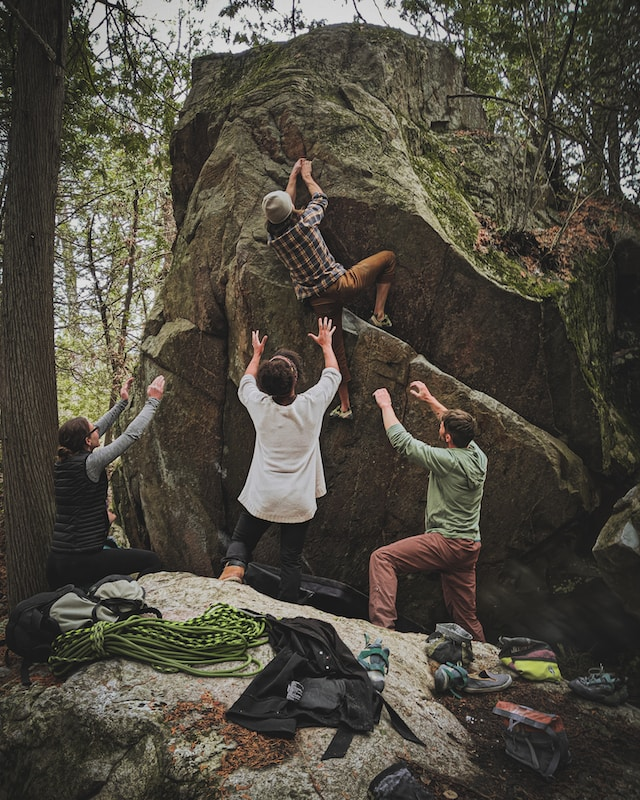
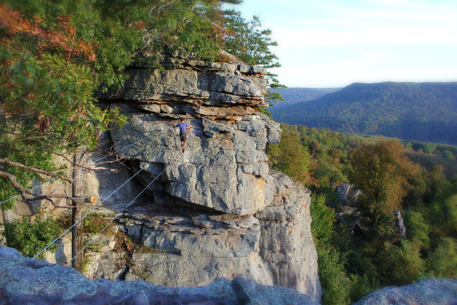
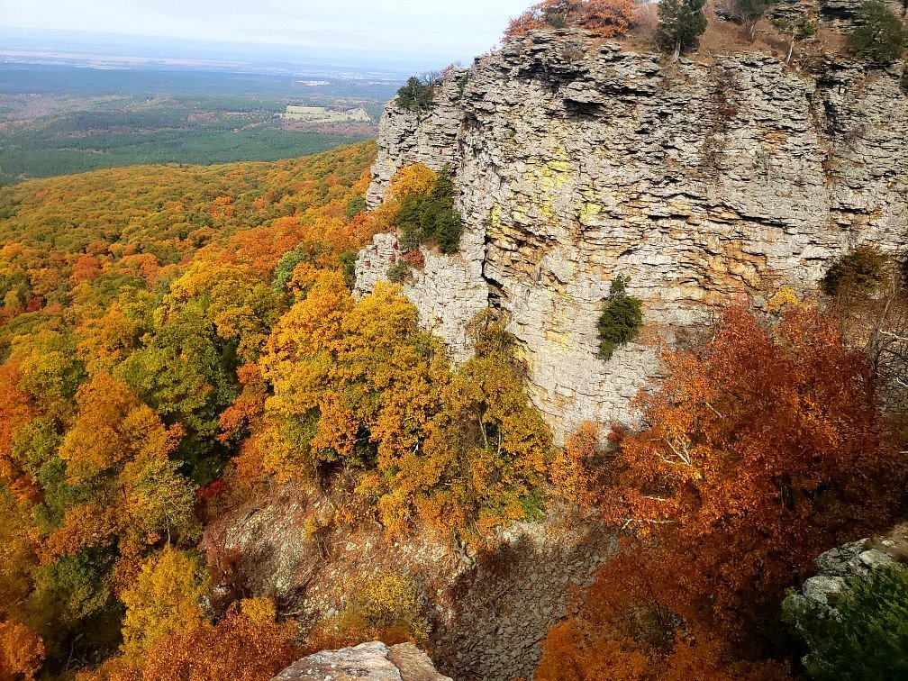

About Us
Rock Climbing Arkansas is made up of local Arkansan rock climbing hobbyists with the goal of sharing all things rock climbing in the Natural State!
Climbing Spots
-
Sam's Throne

Sam's Throne is a popular climbing spot located in the Ozark National Forest. It features steep sandstone cliffs that provide a variety of challenges for climbers of all skill levels.
-
Horseshoe Canyon Ranch
Horseshoe Canyon Ranch is a private ranch that offers camping and climbing opportunities. Its sandstone cliffs offer a range of routes for climbers, from easy to extremely difficult.
-
Mt. Magazine
Mt. Magazine is the highest peak in Arkansas and features sandstone cliffs that offer breathtaking views of the surrounding landscape. Climbers can choose from a variety of routes, including trad, sport, and bouldering.